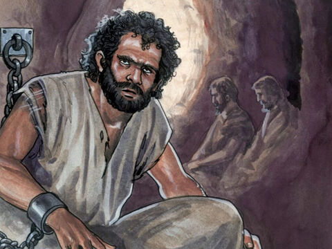
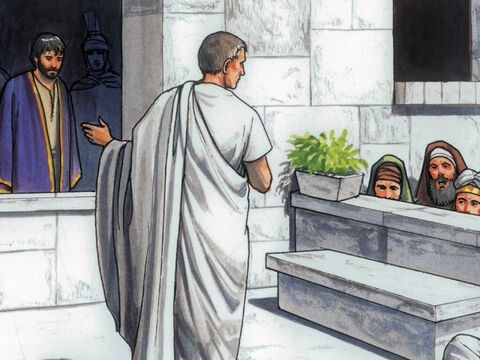
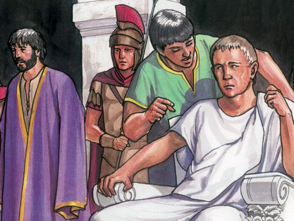
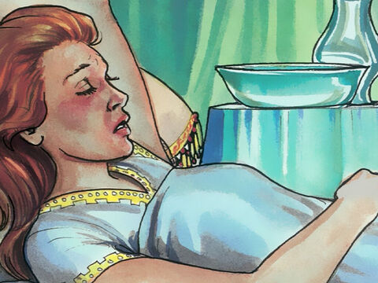
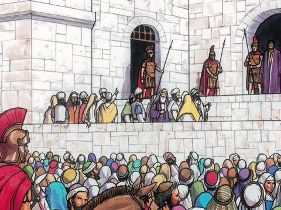
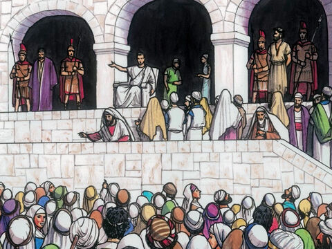
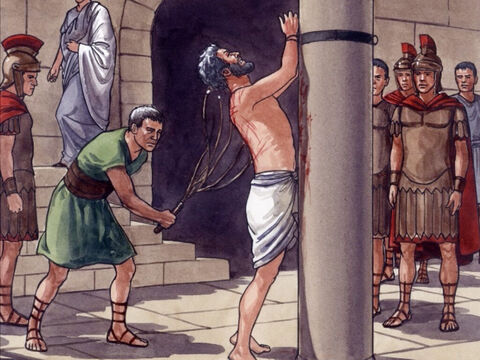
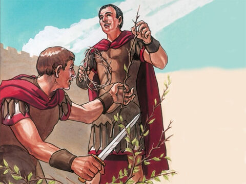
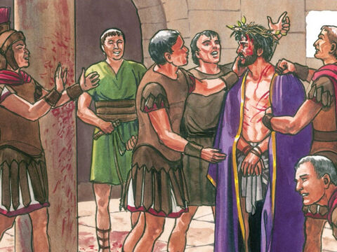

Mocking Of Lord Jesus
Now at that feast the governor was wont to release unto the people a prisoner, whom they would.
And they had then a notable prisoner, called Barabbas.
Therefore when they were gathered together, Pilate said unto them, Whom will ye that I release unto you? Barabbas, or Jesus which is called Christ?
For he knew that for envy they had delivered him.
When he was set down on the judgment seat, his wife sent unto him, saying, Have thou nothing to do with that just man: for I have suffered many things this day in a dream because of him.
But the chief priests and elders persuaded the multitude that they should ask Barabbas, and destroy Jesus.
The governor answered and said unto them, Whether of the twain will ye that I release unto you? They said, Barabbas.
Pilate saith unto them, What shall I do then with Jesus which is called Christ? They all say unto him, Let him be crucified.
And the governor said, Why, what evil hath he done? But they cried out the more, saying, Let him be crucified.
Matthew 27:15-23
Then Pilate therefore took Jesus, and scourged him.
And the soldiers platted a crown of thorns, and put it on his head, and they put on him a purple robe,
And said, Hail, King of the Jews! and they smote him with their hands.
John 19:1-3
- 

- 
- 
- 
- 
- 
- 
- 
- 